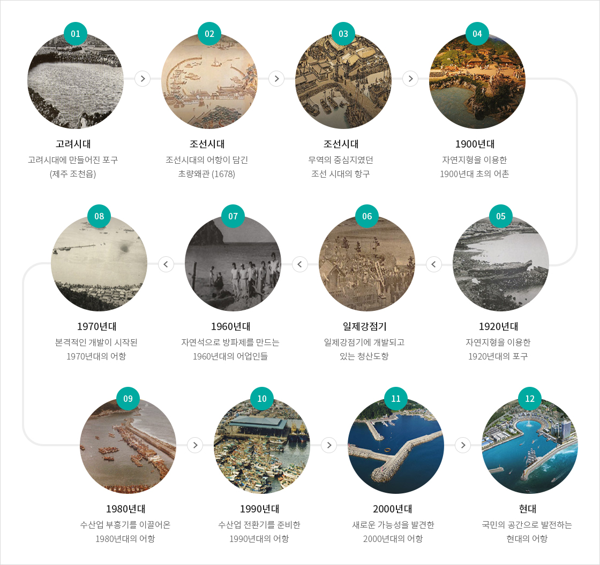
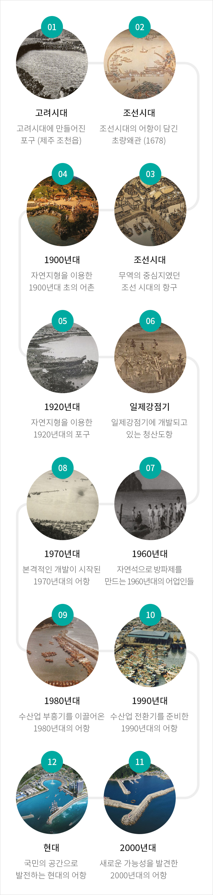

시대별 어항변천
- 홈
- 어항/어촌 정보
- 어항
- 시대별 어항변천
풍경으로 보는 시대별 어항 변천
온전히 사람의 손으로 돌 하나하나를 옮겨 만든 600년 전 옛 문헌의 항구 그림에서 현대의 어항까지 규모와 기능은 변했지만, 어항이 품은 사람의 숨결과 역동성은 시대를 넘어 미래로 이어지고 있다.


- 고려시대 : 고려시대에 만들어진 포구 (제주 조천읍)
- 조선시대 : 조선시대의 어항이 담긴 초량왜관 (1678)
- 조선시대 : 무역의 중심지였던 조선시대의 항구
- 1900년대 : 자연지형을 이용한 1900년대 초의 어촌
- 1920년대 : 자연지형을 이용한 1920년대의 포구
- 일제감정기 : 일제강점기에 개발되고 있는 청산도항
- 1960년대 : 자연석으로 방파제를 만드는 1960년대의 어업인들
- 1970년대 : 본격적인 개발이 시작된 1970년대의 어항
- 1980년대 : 수산업 부흥기를 이끌어온 1980년대의 어항
- 1990년대 : 수산업 전환기를 준비한 1990년대의 어항
- 2000년대 : 새로운 가능성을 발견한 2000년대의 어항
- 현대 : 국민의 공간으로 발전하는 현대의 어항